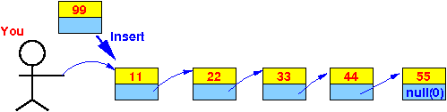

- Pretend that you are hold on to a
linked list and you need
insert a new list element
at the end of the list:
 And you are lazy and refuse to traverse the linked list.
The only action that you want to do is:
- Check if you can insert the new list element as the first element in the list you got in your hand
Convince yourself that this insert procedure will insert the new list element at the end of the list:
- If the
list in your hand is empty:
(that means inserting the new element will create a list with
only 1 element in
the list and the inserted element will also be
the last element in the
list !!!
-
You
will return
the new list element as
the new list
(The new list element will be the last element in the list because it's the only element in the list !!!)
-
You
will return
the new list element as
the new list
- Otherwise:
- You hire an "inserter" to
insert the new list element at the
end of the
sub-list
head.next
-
When this hired person completes
his task (i.e.,
he has successfull inserted the new list element at the end
of the sub-list and he is giving you
the new list with the
inserted list element included), you will
attach his result list
to head.next
- Then you return h as
the new list
- You hire an "inserter" to
insert the new list element at the
end of the
sub-list
head.next
- When you code this
lazy man's search algorithm, you will
have the following algorithm:
static List Insert( List h, List p ) { if ( the list at h is empty ) { Make list element p as the new list; // p is the only element and is also the last element in the list } else { Hire someone to insert p at the end of sublist (h.next); Get his result; Attach his result to h.next; return h; } }If you translates these actions into Java constructs, you will also get this algorithm as discussed in my CS170 webpage (but with some abreviation - I can shortend the else part, you are not in CS170 and should be able to handle this shorted code):
static List Insert( List h, List p ) { if ( h == null ) { p.next = null; return p; } else { // Insert( h.next, p ) = hire an "inserter" to insert // the new list element at the end of // the sub-list head.next // h.next = ... = you attach his result list to head.next h.next = Insert( h.next, p ); return h; } }
- I will code
the following
recursive insert at tail
in
ARM assembler:
static List Insert( List h, List p ) { if ( h == null ) { p.next = null; return p; } else { // Insert( h.next, p ) = hire an "inserter" to insert // the new list element at the end of // the sub-list head.next // h.next = ... = you attach his result list to head.next h.next = Insert( h.next, p ); return h; } } static void main( ) { ptr = new List( ); head = Insert(head, ptr); }Notice that:
- main( ) calls the
Insert( ) method
- main( ) must pass the parameter using the program stack (because Insert is not a leaf method !!!)
- Insert( ) also
calls the
Insert( ) method
(see the call
Insert(h.next, p)
inside the Insert method)
- When Insert(h, p) calls Insert(h.next, p), Insert(head,ptr) must pass the parameters h.next and ptr using the program stack !!!
- main( ) calls the
Insert( ) method
- From the fact that
you must pass parameters of
a recursive method using the
program stack
(because a recursive function is always
a non-leaf function)
and the fact that
Insert( ) has
a parameters
head and ptr,
this is how the
main( ) function must
call Insert( ):
push parameters (head and ptr) on the stack bl Insert add sp, sp, #8 // Clean up the parameter from the stack
- The stack frame structure
that you need to
create will
depend
on:
- The number of parameters and
- The number of local variables used in the function.
- In the Insert( ) method
above, we see that:
- The Insert function has 2 parameter variables and
- 0 local variables.
- The stack frame structure
created (and used by Insert( )
will therefore
be as follows:
Stack frame of the Insert( ) method: SP FP -----> +---------------------+ | old Frame Pointer | +---------------------+ | Return Address | +---------------------+ | head | addr(n) = FP + 8 +---------------------+ | ptr | addr(n) = FP + 12 +---------------------+You can see that the Insert( ) function will:
- access the parameter variable head using offset 8 from the frame pointer FP
- access the parameter variable ptr using offset 12 from the frame pointer FP
- Here is the assembler code
for the main( ) function
that calls Insert( ) with
the value in the variables
head and ptr:
main: // High level programming statement: // // head = Insert(head, ptr) /* ------------------------------------------------- Pass parameter ptr (using stack) ------------------------------------------------- */ movw r0, #:lower16:ptr movt r0, #:upper16:ptr ldr r0, [r0] // r0 = ptr push {r0} // Pass ptr using the program stack /* ------------------------------------------------- Pass parameter head (using stack) ------------------------------------------------- */ movw r0, #:lower16:head movt r0, #:upper16:head ldr r0, [r0] // r0 = head push {r0} // Pass head using the program stack /* ------------------------------------------------------ call Insert(k) ------------------------------------------------------ */ bl Insert add sp, sp, #8 // Clean up the parameters /* ----------------------------------------------------------------- Save return value (in r0) to variable searchValue ----------------------------------------------------------------- */ movw r1, #:lower16:head // Do NOT use r0 !!! movt r1, #:upper16:head // (Because r0 contains the return value) str r0, [r1] // This will store return value in head
- The Insert method in
assembler:
/* ----------------------------------------------------------------------- Insert at tail - recursive function Algorithm: List Insert( List h, List p ) { if ( h == null ) { p.next = null; return p; } else { h.next = Insert( h.next, p ); return h; } } Stack frame of the Insert( ) method: SP FP -----> +---------------------+ | old Frame Pointer | +---------------------+ | Return Address | +---------------------+ | h | addr(n) = FP + 8 +---------------------+ | p | addr(n) = FP + 12 +---------------------+ ----------------------------------------------------------------------- */ Insert: /* ============================= Prelude: build stack frame ============================= */ push {lr} push {fp} mov fp, sp sub sp, sp, #0 // No local variables // if ( h == null ) ldr r0, [fp, #8] cmp r0, #0 bne else // p.next = null ldr r0, [fp, #12] mov r1, #0 // null str r1, [r0, #4] // p.next = null // return p ldr r0, [fp, #12] // Set up r0 = return value (p) /* ========================================== Postlude - clean up and return to caller ========================================== */ mov sp, fp pop {fp} pop {pc} else: // h.next = Insert( h.next, p ); //// pass p ldr r0, [fp, #12] // r0 = p push {r0} // Pass p with stack //// pass h.next ldr r0, [fp, #8] // r0 = h ldr r0, [r0, #4] // r0 = h.next push {r0} // Pass h.next with stack bl Insert add sp, sp, #8 // Clean up 2 parameters //// Store return value (in r0) in h.next ldr r1, [fp, #8] // r1 = h str r0, [r1, #4] // h.next = return value from Insert(h.next,p) // return( h ); ldr r0, [fp, #8] // Set up r0 = return value (h) /* =========================================== Postlude - clean up and return to caller =========================================== mov sp, fp pop {fp} pop {pc}
- Example Program:
(Demo above code)

- Prog file: /home/cs255001/demo/asm/9-list-recursion/Insert.s
How to run the program:
- To compile: as255 Insert
- To run: use EGTAPI
- I will highlight certain steps in the program in the remainder of the webpage....
- Passing the
parameters
head
and
ptr
from main program to Insert
The main program passes the variables head and ptr to the Insert method by pushing the value of variables head and ptr onto the system stack with the following instruction:
// Pass ptr using the stack movw r0, #:lower16:ptr movt r0, #:upper16:ptr // r0 = addr(ptr) ldr r0, [r0] // r0 = ptr push {r0} // Pass ptr on the stack // Pass head using the stack movw r0, #:lower16:head movt r0, #:upper16:head // r0 = addr(head) ldr r0, [r0] // r0 = head push {r0} // Pass head on the stackThis will create the following stack structure:
+---------------------+ <------------ Stack pointer (SP) | head | +---------------------+ | ptr | +---------------------+
- Main program calling the
Insert function
The main program calls the Insert function with a bl instruction:
bl InsertThis will save the return address to main( ) in the LR register and jump to the Insert method
The Insert( ) function will start running, so let's take a look at the Insert( ) function
- Prelude of the Factorial function:
The prelude of the Insert function consists of these instructions:
/* ========================================================== Function Prelude: complete the stack frame structure ========================================================== */ push {lr} // Save LR (return address) push {fp} // Save FP (used by caller) mov fp, sp // Mark the stack top location before // allocating any local variables sub sp, sp, #0 // Allocate 0 int variables on the stack // (I could omit this instruction....)I will explain what each one does below.
Make sure that you realise that the structure of the stack frame is like this when the prelude of the Insert( ) method is executed:
+---------------------+ <------------ Stack pointer (SP) | head | +---------------------+ | ptr | +---------------------+
- push {lr}
This instruction will save the return address in the LR register on the program stack.
The program stack now looks like this:
+---------------------+ <------------ Stack pointer (SP) | return address | +---------------------+ | head | +---------------------+ | ptr | +---------------------+
- push {fp}
This will save the frame pointer on the stack and the program stack now looks like this:
+---------------------+ <------------ Stack pointer (SP) | old Frame Pointer | +---------------------+ | return address | +---------------------+ | head | +---------------------+ | ptr | +---------------------+
- mov fp,sp
This will make the frame pointer FP points to the stack frame that is being built:
+---------------------+ <------------ Frame pointer FP & Stack pointer SP | old Frame Pointer | point to the same location.... +---------------------+ | return address | +---------------------+ | head | +---------------------+ | ptr | +---------------------+
The will enable the Insert( ) to use offset from the frame pointer to access the parameters and local variables that are stored in the program stack
- sub sp,sp,#0
The subtract instruction is used to allocate local variables on the program stack
But since Insert( ) has no local variables, this instruction does nothing to the stack pointer SP... (and we could omit it - I left it in to keep the discussion uniform)
We have now completed the stack frame:
+---------------------+ <---- Frame pointer FP & Stack pointer SP | old Frame Pointer | point to the same location.... +---------------------+ | return address | +---------------------+ | head | +---------------------+ | ptr | +---------------------+
When the prelude is finish, the stack frame is complete and the actual function can begin.
- push {lr}
- How to access the parameters
h (= head)
and
ptr
in the
Insert function:
- Parameter h
is located 8 bytes
(old Frame Pointer is 4 bytes and
return address is 4 bytes)
below
the location pointed to
by frame pointer FP.
-
Parameter ptr
is located 12 bytes
(old Frame Pointer is 4 bytes,
return address is 4 bytes and
h is 4 bytes))
below
the location pointed to
by frame pointer FP.
+---------------------+ <-------------- Frame pointer FP | old Frame Pointer | (4 bytes) +---------------------+ | return address | (4 bytes) +---------------------+ | h=head | <--- offset = 8 +---------------------+ | p=ptr | <--- offset = 12 +---------------------+
So base register (FP) + offset 8 will let you access h (= head)
And base register (FP) + offset 12 will let you access ptr
That's why you see the use of the following instructions in Insert( ) to get the parameter:
ldr r0, [fp,#8] // r0 = h and ldr r0, [fp,#12] // r0 = p
- Parameter h
is located 8 bytes
(old Frame Pointer is 4 bytes and
return address is 4 bytes)
below
the location pointed to
by frame pointer FP.
- How Insert(h, p)
calls Insert(h.next, p):
It is no different from how the main program calls the Insert function.
The Insert method can call the Insert method by passing the parameter on the program stack and then use bl Insert to call the Insert method.
But make sure you pop the parameter from the stack after the Insert function returns - because the parameter has not been cleaned up.
The following is the program fragment where Insert calls Insert(h.next, p) by passing the parameters h.next and ptr on the stack:
// Call Insert( h.next, ptr ) ldr r0, [fp,#12] // r0 = p push {r0} // Pass p as parameter on stack ldr r0, [fp,#8] // r0 = h ldr r0, [r0,#4] // r0 = h.next push {r0} // Pass h.next as parameter on stack // Call Insert( ) with parameters: h.next and p on stack bl Insert add sp, sp, #8 // Clean up parameters